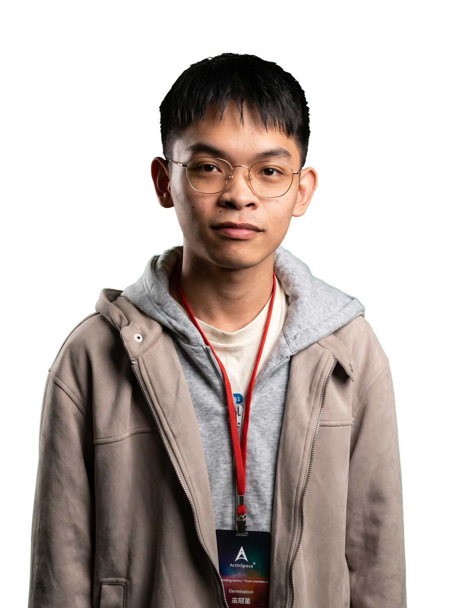

F-16 一對一機砲纏鬥，由國家中山科學研究院航空研究所主辦。模型從隨機權重開始，用強化學習（PPO）和對手池自己練出來；為了訓練速度，另外把飛行模擬搬到 GPU。 One-on-one F-16 gun dogfights, hosted by the Aeronautical Systems Research Division of NCSIST. The agent was trained from random weights with reinforcement learning (PPO) and an opponent league; to train fast enough, the flight simulation was ported to the GPU.
由法國太空總署（CNES）與歐洲太空總署（ESA）主辦，用航太與太空數據解決地球與太空應用的題目。 Organized by CNES and ESA: applying aerospace engineering and space data to challenges on Earth and in space.
自主移動機器人底盤加上兩支 TM5S 機械手臂，整合 ROS 2 / Nav2 導航。感知模組 Garbage YOLO（YOLOv11-OBB）負責垃圾分類與夾取姿態預測，做到動態避障、辨識與自主夾取。 An AMR base with dual TM5S arms on a ROS 2 / Nav2 navigation stack. The Garbage YOLO (YOLOv11-OBB) perception module classifies objects and predicts grasp pose, for dynamic obstacle avoidance and autonomous grasping.
用 UE5 畫畫面、JSBSim 算飛行動力學的 F-16 空戰模擬軟體，給空戰 AI 研究用。物理、裁判和對手模型跑在 Host 端，透過 UDP 跟座艙畫面分開；研究員可以自己駕駛，跟強化學習或規則型模型即時對打，找出模型的弱點。 An F-16 air-combat simulator rendered in Unreal Engine 5 and driven by JSBSim, built for air-combat AI research. Physics, refereeing and opponent models run on the host and are decoupled from the cockpit visuals over UDP, so a researcher can fly against RL or rule-based models in real time and find their weaknesses.
把 JSBSim 1.3.1 的 F-16 飛行動力學移植成批次的 PyTorch，一張顯卡同時模擬上千架飛機，給強化學習用。不手抄任何氣動或飛控表格：寫了一個直譯器直接讀 JSBSim 的 XML。每個模組都逐項與原版比對，誤差在 1e-16 等級或逐位元相同。 A port of JSBSim 1.3.1's F-16 flight dynamics to batched PyTorch, stepping thousands of aircraft together on one GPU for reinforcement learning. No hand-copied aerodynamic or flight-control tables: an interpreter reads JSBSim's own XML. Every module is checked against the real JSBSim property by property, matching to about 1e-16 or bit for bit.
訓練空戰 AI 時，發現 JSBSim 官方 F-16 模型的襟副翼混合有誤：左右訊號相加而不是相減，襟翼互相抵消，副翼卻被當成襟翼去算阻力和升力，於是一側副翼會產生推力。追到 2010 年的一次同步之後，向上游送出修正。 While training air-combat agents, found that the flaperon mixing in JSBSim's stock F-16 model adds the left and right signals instead of subtracting them: the flaps cancel out, and the aileron deflection is fed into the flap drag and lift terms, so one aileron produces thrust. Traced it to a 2010 sync and sent a fix upstream.
給成大學生的開源瀏覽器擴充功能。用心跳續期解決 Moodle 自動登出，並內建在本機用樣板比對辨識驗證碼，支援 Moodle、選課系統等校內系統。 An open-source browser extension for NCKU students. Keeps Moodle sessions alive with heartbeat renewals, and solves captchas locally by template matching across Moodle and the course-registration portals.
LAM 怎麼用 IDM 和 FDM 從沒有動作標籤的資料學出動作；再用空戰模擬看 SAC 模型的限制，提出階層式切換控制和 PFSP 對手池。 How LAM uses an IDM and an FDM to learn actions from data without action labels; then the limits of a SAC agent in air-combat simulation, hierarchical switching control, and a PFSP opponent pool.